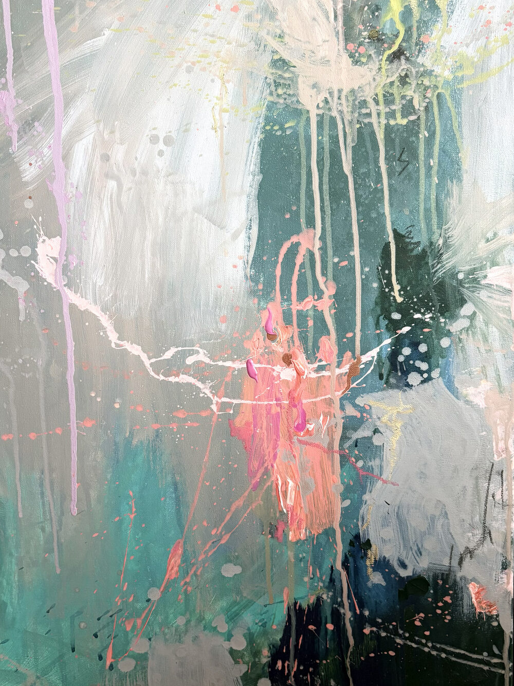

Teambuilding &
Identity Workshop
Was macht euch als Unternehmen aus? Was verbindet euch als Team – und wie könnte eure gemeinsame Identität in einem Bild sichtbar werden?
Bei meinem Projekt „Business Art“ wird Unternehmensidentität kreativ erlebbar. In einem gemeinsamen Teambuilding-Workshop setzt ihr euch mit eurer Marke, euren Werten, eurer Geschichte und dem auseinander, was euch als Team einzigartig macht – und dabei entsteht euer Bild.
Gemeinsam entwickeln wir eine Bildidee, die eure Identität aufgreift und in Farben, Formen und Strukturen übersetzt. Welche Werte sind euch wichtig? Was treibt euch an? Was verbindet euch? Wo wollt ihr hin? Und welche Geschichte möchtet ihr als Team erzählen?
Der kreative Prozess wird dabei selbst zum Teambuilding: gemeinsam entwickeln, ausprobieren, Entscheidungen treffen, Perspektiven teilen und etwas Neues entstehen lassen.
Es sind keine künstlerischen Vorkenntnisse notwendig. Ich gebe euch den richtigen Rahmen, begleite den Prozess und unterstütze euch mit Impulsen und Grundlagen aus der Malerei.
Ihr bringt eure Ideen, eure Perspektiven und eure Lust am gemeinsamen Gestalten mit.
Am Ende steht ein einzigartiges Kunstwerk, das eure Unternehmensidentität sichtbar macht – und gleichzeitig an den gemeinsamen Prozess erinnert. Ein Bild, das nicht nur an der Wand hängt, sondern für euch als Team steht.